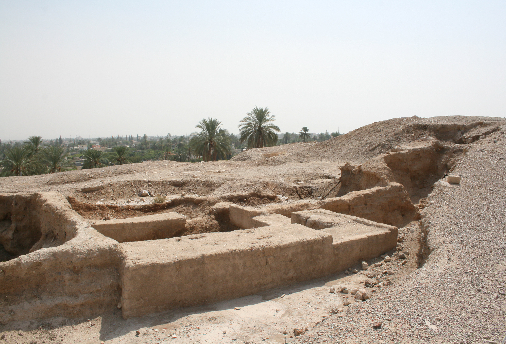

Jericho (Tell es-Sultan)

- Find Name
- Jericho (Tell es-Sultan)
- Historical Period
- Bronze Age
- Artifact Date
- Neolithic through Bronze Age (tell occupied from c. 8000 BC)
- Date Discovered
- 1930–1936 (Garstang); 1952–1958 (Kenyon excavations)
- Discovery Location
- Tell es-Sultan, Jericho, West Bank
- Current Location
- In situ, Jericho
- Timeline Era
- Conquest and Judges
- Description
- The excavated mound of ancient Jericho, one of the world's oldest towns, with a Neolithic tower and walls far older than any biblical king. Its Bronze Age layers are the heart of a famous debate: Kathleen Kenyon found no Late Bronze Age city wall at the time of the conquest narrative, while John Wood later argued the evidence had been misread and a Late Bronze wall did exist. The tell itself is certainly biblical Jericho; what its walls prove about Joshua 6 is honestly debated.
- Biblical Significance
- Jericho is where Israel's conquest begins and where Rahab's scarlet cord hangs in the window. The tell does not settle the argument by itself — and that is the honest point. It invites readers to hold the biblical account and the archaeology together carefully, neither dismissing the dig nor forcing it to say more than it does.
- Evidence Class
- Contextual
- Interpretations
- Scholars agree Tell es-Sultan is biblical Jericho; they disagree on the Late Bronze Age evidence. Kenyon's conclusion that no LB city wall existed is widely cited, while Wood's re-reading in favour of an LB wall has supporters and critics. The entry must not present either side as settled.
- Scripture Illuminated
- Related Books
- Related Places
- Related Events
Awaiting Review Not yet checked against scholarly sources. Treat its claims as provisional until this entry is reviewed. About verification
Last reviewed: not yet reviewed